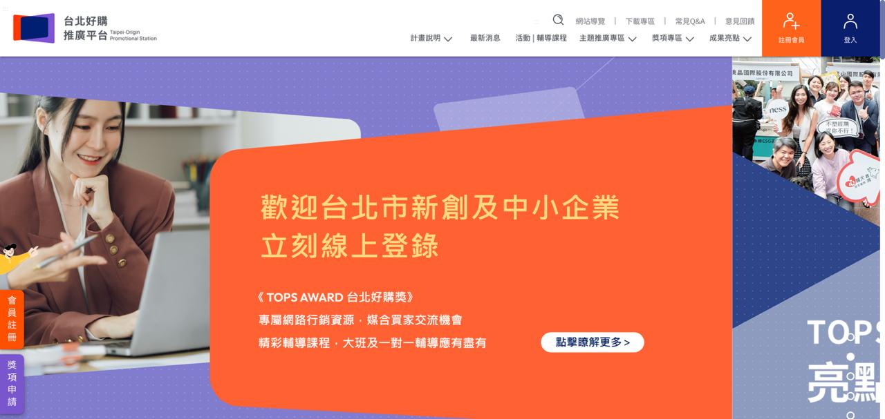

B2B 生態系

TOPS 台北好購 —— 全台首創 B2B 採購媒合平台與獎勵機制
標籤：#B2B生態系 #政策行銷 #ESG永續採購 #新創三箭 #數位媒合
【挑戰：打破新創與大企業間的採購牆】
如何讓新創企業的創新方案，真正進入大型金融與標竿企業的採購清單？Scope PR 協助台北市政府產業發展局執行「TOPS 台北好購」平台，挑戰在於不僅要推廣一個數位平台，更要建立一套讓大企業願意持續「回購」的機制，將政策轉化為實質經濟動能。
【策略：數位媒合 x 獎勵機制 x 典範行銷】
Scope PR 導入「數據驅動」與「永續治理」的思維，優化專案影響力：
- 建構「採購獎勵」溝通邏輯：協助梳理「採購貢獻獎」與「回購獎勵金」機制，透過實質誘因導流大企業採購方（如：玉山金控、中信銀、富邦人壽）持續支持在地新創。
- 串聯 ESG 與永續價值：特別設置「永續共榮獎」，將傳統採購提升至「企業社會責任」與「SDGs 實踐」的戰略高度。
- 高規格盛典與精準論述：統籌頒獎典禮暨啟動記者會，將 3.48 億元的採購成果轉化為具備「新聞爆發力」的數據指標。
【結果：半年創造 3.48 億實質經濟產值】
- • 數據說話：啟動不到半年，累計採購金額突破新台幣 3 億 4,800 餘萬元。
- • 平台規模：成功吸引超過 870 家採購方與 527 家供應方加入。
- • 定義標竿：讓「支持新創」成為台北企業的共同 DNA，展現 Scope PR 在 B2B 領域的戰略諮詢能力。